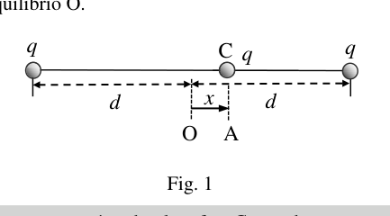

P2. Carga oscilante. Considera dos pequeñas esferas sujetas en los extremos de una varilla no conductora de longitud 2d (Figura 1). Una tercera esfera C tiene masa m y puede deslizar sin rozamiento en la varilla. Las tres esferas son no conductoras y cada una tiene una carga eléctrica q distribuida sobre su superficie. Se separa la esfera C una distancia x de la posición de equilibrio O. Fig. 1 a) Halla la expresión de la fuerza que actúa sobre la esfera C cuando se encuentra a distancia x de la posición de equilibrio. b) ¿Cuál es la expresión de la fuerza sobre la esfera C si se considera que x << d ? Se desplaza la esfera C hasta un punto A, a una distancia x = d/20 hacia la derecha de O, como se observa en la figura, y se libera. c) Calcula la velocidad que llevará la esfera C cuando pase por la posición de equilibrio O. d) Calcula la frecuencia angular de oscilación de la esfera C alrededor de la posición de equilibrio. e) ¿Cuánto tiempo tardará la esfera C en ir desde A hasta O. f) Para 10 nC q = , 10 cm d = y 1g m = , calcula el valor del periodo T de una oscilación completa de la esfera C alrededor del punto O. Datos: * Constante de Coulomb, 9 2 -2 1 9 10 N m C 4 o
* 9 1nC 10 C
x q q q d d O C A 33 OLIMPIADA ESPAÑOLA DE FÍSICA FASE DE ARAGÓN P2. Solución a) La fuerza sobre la esfera cargada C será la suma de las fuerzas producidas sobre ella por cada una de las esferas cargadas de los extremos, 1 2 F F F
. Ambas fuerzas son repulsivas. La fuerza que ejerce cada una de las esferas sobre la esfera C es la misma que se ejercería entre dos cargas puntuales, 2 2 2 2 1 1 4 4 ( ) ( ) o o q q F d x d x
+ 2 2 2 1 4 4 ( ) ( ) o q d x F d x d x = + (1) b) Si x << d, podemos aproximar 2 2 ( ) x d d y 2 2 ( ) x d d + en la expresión (1) de modo que 2 3 1 4 4 o q x F d (2) c) La fuerza eléctrica sobre la carga q es conservativa, por lo tanto, se conserva la energía mecánica entre A y O. 2 2 2 2 1 1 1 1 2 4 4 4 2 20 20 o o o q q q mv d d d d d +
2 1 0,1 4 o q v md
(3) d) En la expresión (2) se observa que la fuerza F es proporcional a la distancia x de separación de la posición de equilibrio, y de sentido contrario, similar a una fuerza elástica F Kx = , a partir de lo que podemos determinar la “constante elástica” K del sistema, 2 3 1 4 4 o q x Kx d
2 3 1 4 4 o q K d
(4) La frecuencia angular de oscilación alrededor de la posición de equilibrio vendrá dada por K m = 2 3 1 4 4 o q md
(5) e) El tiempo que tardará la partícula C en ir de A hasta O será un cuarto del periodo T, tiempo que tarda en realizar una oscilación completa y volver a A. A partir de la expresión (5) se obtiene 3 2 (1/ 4 ) o md T q
= (6) De modo que el tiempo para ir de A hasta O será 4 T t = 3 4 (1/ 4 ) o md t q
(7) f) Expresando q, m y d en unidades del Sistema Internacional y sustituyendo en la expresión (6) obtenemos 3,31s T = 33 OLIMPIADA ESPAÑOLA DE FÍSICA FASE DE ARAGÓN

Tre sfere cariche su asta non conduttriceTopic: Electrostatics, Oscillations & Waves Metodi: Coulomb’s Law, Small-Angle Approximation, Simple Harmonic Motion Analysis, Energy Conservation Method Competenze: Mathematical Modeling, Physical Reasoning Objects: Sphere, Rod, Point Charge Fonte: Testo (PDF) — p.5
P2. Carico oscilante. Considera due piccole sfere attaccate alle estremità di un bastone non conduttore di lunghezza 2d (Figura 1). Una terza sfera C ha massa m e può scivolare senza rottura sul bastone. Le tre sfere sono Le parti di questo sistema sono di tipo non conduttore e ognuna ha una carica elettrica distribuita sulla sua superficie. Separazione della sfera C una Distanza x dalla posizione di equilibrio O. Fig. 1 a) Trova l’espressione della forza che agisce sulla sfera C quando si trova a distanza x dalla posizione di equilibrio. b) Qual è l’espressione della forza sulla sfera C se si considera che x << d ? La sfera C viene spostata fino a un punto A, a una distanza x = d/20 verso la destra di O, come si osserva nella figura, e si libera. c) Calcola la velocità che la sfera C porterà quando passerà attraverso la posizione di equilibrio O. d) Calcola la frequenza angolare di oscillazione della sfera C attorno alla posizione di equilibrio. e) Quanto tempo ci vorrà per la sfera C di andare da A a O. f) Per 10 nC q = , 10 cm d = y 1g m = , calcola il valore del periodo T di un’oscillazione completa della sfera C intorno al punto O. Data: * Costante di Coulomb, 9 2 -2 1 9 10 N m C 4 o
* 9 1nC 10 C
x q q q d d O C A 33 Olimpiadi di Fisica in Spagna Fase di ARAGON P2. Soluzione a) La forza sulla sfera carica C sarà la somma delle forze prodotte su di essa da ciascuna delle sfere cariche dalle estremità, 1 2 F F F
. Entrambe le forze sono ripugnanti. La forza esercitata da ogni una sfera sopra la sfera C è la stessa che si eserciterebbe tra due carichi puntiali, 2 2 2 2 1 1 4 4 ( ) ( ) o o q q F d x d x
+ 2 2 2 1 4 4 ( ) ( ) o q d x F d x d x = + (1) b) Se x << d, possiamo avvicinare 2 2 ( ) x d d y 2 2 ( ) x d d + in espressione (1) in modo che 2 3 1 4 4 o q x F d (2) c) La forza elettrica sulla carica q è conservatrice, quindi l’energia meccanica viene conservata tra A e A. y O. 2 2 2 2 1 1 1 1 2 4 4 4 2 20 20 o o o q q q mv d d d d d +
2 1 0,1 4 o q v md
(3) d) Nella espressione (2) si osserva che la forza F è proporzionale alla distanza x di separazione della posizione di equilibrio, e di senso contrario, simile a una forza elastica F Kx = , da quanto possiamo determinare la costante elastica K del sistema, 2 3 1 4 4 o q x Kx d
2 3 1 4 4 o q K d
(4) Frequenza angolare di oscillazione intorno alla posizione di equilibrio verrà data da K m = 2 3 1 4 4 o q md
(5) e) Il tempo che ci vorrà per la particella C di andare da A a O sarà un quarto del periodo T, tempo che ci vorrà per fare un’oscillazione completa e tornare a A. L’espressione (5) è 3 2 (1/ 4 ) o md T q
= (6) Quindi il tempo per andare da A a O sarà 4 T t = 3 4 (1/ 4 ) o md t q
(7) f) Esprimendo q, m e d in unità del Sistema Internazionale e sostituendo in espressione (6) otteniamo 3,31s T = 33 Olimpiadi di Fisica in Spagna Fase di ARAGON
Tre sfere carica la sua asta non conduttrice
Topic: Electrostatics, Oscillations & Waves Metodi: Coulomb’s Law, Small-Angle Approximation, Simple Harmonic Motion Analysis, Energy Conservation Method Competenze: Mathematical Modeling, Physical Reasoning Objects: Sphere, Rod, Point Charge Fonte: Testo (PDF) — p.5
P2. It’s a swinging charge. Consider two small spheres attached at the ends of a non-conductive rod of length 2d The Commission has not yet adopted a proposal. A third C-sphere has mass m and can slide without a scratch on the rod. The three spheres are Each of these is non-conductive and each has an electrical charge distributed over its surface. The sphere C one is separated distance x from the equilibrium position O. Fig. 1 a) Find the expression of the force acting on the sphere C when it is at a distance x from the position The balance. b) What is the expression of the force on the sphere C if we consider that x < d? The sphere C is moved to a point A, at a distance x = d/20 to the right of O, as seen In the figure, and it’s released. c) Calculate the speed the sphere C will travel at when it passes through the equilibrium position O. d) Calculate the angular frequency of oscillation of the sphere C around the equilibrium position. e) How long will it take the C-sphere to go from A to O? f) Stop 10 nC q = , 10 cm d = y 1g m = , calculates the value of the period T of a complete oscillation of the Sphere C around the point O. The data set is the following: 9 2 -2 1 9 10 N m C 4 o
* 9 1nC 10 C
x q q q d d O C A 33 Spanish Olympics in Physics The following is the list of the categories of products: P2. Solution a) The force on the charged sphere C is the sum of the forces produced on it by each of the Charged spheres from the ends, 1 2 F F F
. Both forces are repulsive. The force exerted by each one of the spheres above the sphere C is the same as would be exercised between two point loads, 2 2 2 2 1 1 4 4 ( ) ( ) o o q q F d x d x
+ 2 2 2 1 4 4 ( ) ( ) o q d x F d x d x = + (1) (b) If x << d, we can approximate 2 2 ( ) x d d y 2 2 ( ) x d d + in expression (1) so that 2 3 1 4 4 o q x F d (2) c) The electrical force on the charge q is conservative, therefore the mechanical energy is conserved between A and A. y O. 2 2 2 2 1 1 1 1 2 4 4 4 2 20 20 o o o q q q mv d d d d d +
2 1 0,1 4 o q v md
(3) d) In expression (2) it is noted that the force F is proportional to the distance x from the position of a kind used for the manufacture of electrical equipment Kx = , from what we can determine the elastic constant K of the system, 2 3 1 4 4 o q x Kx d
2 3 1 4 4 o q K d
(4) Angular frequency of oscillation around the equilibrium position will be given by K m = 2 3 1 4 4 o q md
(5) e) The time it will take the particle C to go from A to O will be one quarter of the period T, the time it takes to Make a complete oscillation and go back to A. From the expression (5) is obtained 3 2 (1/ 4 ) o md T q
= (6) So the time to go from A to O will be 4 T t = 3 4 (1/ 4 ) o md t q
(7) f) Expressions q, m and d in units of the International System and substituting in the expression (6) are obtained 3,31s T = 33 Spanish Olympics in Physics The following is the list of the categories of products:
*Tre sphere charge its non-conductive axis *
Topic: Electrostatics, Oscillations & Waves Metodi: Coulomb’s Law, Small-Angle Approximation, Simple Harmonic Motion Analysis, Energy Conservation Method Competenze: Mathematical Modeling, Physical Reasoning Objects: Sphere, Rod, Point Charge Fonte: Testo (PDF) — p.5